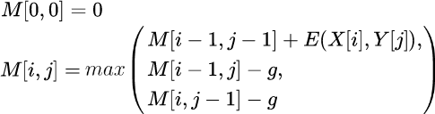

Dynamic Programming instructions
Global Alignment - Score Matrix
Global Alignment - Traceback Routine
Introduction
In this individual assignment, you will implement three sequence alignment algorithms that forms the basis of contemporary tools in bioinformatics. Your code must be compatible with Python 3. We provide a code template that gives you a handhold for the algorithms you are to implement. This template includes, among others, basic functions to read files, command line arguments, and print outputs to your screen or to files. We also provide substitution matrices, so you don’t need to implement them from scratch. Note that to facilitate feedback, testing and grading, programs have to adhere strictly to the specifications below.
Grading
You can submit the assignment multiple times to the AutoGrader
to monitor your progress. Up to [20] points are granted as
follows:
| Points | |
| 1 |
No use of the import function / keyword in any context other than the lines already in the code template, i.e. "import argparse" and import pickle" Also no use of the functions eval, exec or compile |
| 1 | The script compiles and runs without errors, and contains the same functions the code template under the same name. (Adding functions is allowed and encouraged; removing functions is not!) |
| 8 | Your script produces the correct score matrix and alignment score for global alignment |
| 2 | Your script correctly implements a (high road) traceback routine, producing the maximal scoring global alignment |
| 4 | Correct semiglobal score matrix [1 point], alignment score [1 point] and traceback / alignment [2 points] |
| 4 | Correct local score matrix [1 point], alignment score [1 point] and traceback / alignment [2 points] |
Your code should produce the maximum scoring high road
alignment for every possible combination of parameters. Each of
the above topics will be tested automatically, if and only if the
previous topic received full points. For example, local traceback is
only tested if the local alignment score is correct, and the semiglobal
score matrix is only tested if your global traceback is correct. Refer
to the Handing in your code section for further information.
Global Alignment — Score Matrix
For this exercise, you are required to implement the Needleman-Wunsch global alignment algorithm with a linear gap penalty, as explained during the lectures. The algorithm consists of two phases: 1) compute the score matrix through dynamic programming, and 2) perform traceback to find the optimal alignment. We start by implementing the part that computes the score matrix. Note that the code template splits this up into initializing the matrix (along with its first row and column), and filling out cells for which i > 0 and j > 0.
Matrix entries should be computed according to this equation:

where M is the score matrix; E is the substitution matrix; X and Y are the two sequences; i and j are position indices in X and Y respectively; and g is the gap penalty. For this exercise, we will only use linear gap penalties.
The code template already contains a function that reads two sequences from an input FASTA file. In this format, each sequence starts with one line beginning with a “>” symbol, immediately followed by the name and/or a description of the sequence, extending to the end of the line. The sequence residues themselves appear on subsequent lines, up to the point where a new sequence name starts (signaled by another “>”) or the end of the file. The program will align the first two sequences appearing in the input file; the name of the file is given as a command line argument. An example file, test.fasta, contains the following sequences:
>seq1
YICSFADCCF
>seq2
FPCKEECA
The code in the template already reads in the two sequences (or terminates with an error message if the input does not conform to FASTA). The template also provides the option to select one of the provided substitution matrices, with the -[-m]atrix flag. Valid options are pam250 (default), blosum62 and identity. The gap penalty can be set with the -[-g]ap_penalty flag (default = 2).
Using the default substitution matrix and gap penalty (pam250 and 2), the function print_score_matrix in the skeleton script should print the following:
- F P C K E E C A
- 0 -2 -4 -6 -8 -10 -12 -14 -16
Y -2 7 5 3 1 -1 -3 -5 -7
I -4 5 5 3 1 -1 -3 -5 -6
C -6 3 3 17 15 13 11 9 7
S -8 1 4 15 17 15 13 11 10
F -10 1 2 13 15 13 11 9 8
A -12 -1 2 11 13 15 13 11 11
D -14 -3 0 9 11 16 18 16 14
C -16 -5 -2 12 10 14 16 30 28
C -18 -7 -4 10 8 12 14 28 28
F -20 -9 -6 8 6 10 12 26 26
The first sequence is printed vertically, and the second
sequence horizontally (both prefaced by a dash). The width of each
column is 5 characters. If you provide the -[-v]erbose flag on command line, print_score_matrix is automatically called at the appropriate time by the main function.
Proceed as follows:
- Carefully inspect the structure of the code template. Start with the main() function and make sure you understand why it calls certain functions in certain order.
-
Complete the first code block in the template. All you need to know to initialize the first row and column of the score matrix for global alignment is the gap penalty!
- Write a function that computes the score for a given cell in your score matrix. Since each cell’s value depends only on the cells to its top, left, and top-left, an easy way is to compute all matrix entries row-wise from top to bottom, and each row from left to right. (Hint: The code template imports the specified substitution matrix as a nested dictionary with amino acids as keys.)
Make sure to test your program after each step. Also test your
program with very short (1 residue) and long sequences, then manually
verify the output is correct. When in doubt: print() everything!
Global Alignment — Traceback Routine
You should by now have confirmed your script produces the correct score matrix. Next, extend the program by implementing a high road traceback routine, such that aligned_seq1, aligned_seq2 and align_score end up with the correct values. The function print_alignment shows the aligned sequences and their score that your traceback routine produced. With the default parameters, test.fasta's alignment should look like:
YICSFADCCF
| |
FPCK-EECA-
Score: 26
Again, this function is called automatically if you run the program -[-v]erbose. You can also use the function save_alignment
to save your alignment to a file, if an output file path is specified.
(Its contents are formatted differently from that of the print_alignment function!)
Proceed as follows:
- Remove the dummy values from the third code block. Find the actual alignment score and save it as align_score. Declare two empty strings that will eventually hold your aligned sequences with "-" characters representing gaps:
aligned_seq1 = ''
aligned_seq2 = ''
- Starting from the bottom-right corner, construct the aligned
sequences from right to left, as practiced in the paper exercise.
Confirm you produce the same alignment as shown above.
- Test your program with different sequences, including some that (should) yield gaps at the beginning or end of the sequences. Manually confirm your program's output is correct.
Semiglobal Alignment
Expanding your program, you now have to implement semiglobal alignment. The program should continue supporting global alignment as well. Which alignment strategy to use can be specified with the -[-s]trategy parameter from command line. If necessary, refer to the lecture slides for a reminder of how semiglobal alignment differs from global alignment.
As before, implement your traceback routine following the high road method. Note this means that if more than one cell in the last row or column has the maximum value, your traceback must pass through the one in the highest row -- i.e. the one with the lowest index with respect to sequence 1.
With the default parameters, the sequences in test.fasta should produce the following score matrix and alignment:
- F P C K E E C A
- 0 0 0 0 0 0 0 0 0
Y 0 7 5 3 1 -1 -2 0 -2
I 0 5 5 3 1 -1 -3 -2 -1
C 0 3 3 17 15 13 11 9 7
S 0 1 4 15 17 15 13 11 10
F 0 9 7 13 15 13 11 9 8
A 0 7 10 11 13 15 13 11 11
D 0 5 8 9 11 16 18 16 14
C 0 3 6 20 18 16 16 30 28
C 0 1 4 18 16 14 14 28 28
F 0 9 7 16 14 12 12 26 26
YICSFADC-CF
| |
FPCK-EECA--
Score: 28
Before submitting your program, do not forget to test it with different input sequences, including ones that match poorly on the starting and/or ending sides of the sequences. Sequences that mismatch over the entire sequence length should yield a semiglobal alignment where the sequences appear “drifted apart:” the resulting alignment contains many leading gaps in one sequence and many trailing gaps in the other sequence, such that (nearly) all residues are aligned to gaps.
Local Alignment
The last alignment strategy your program should implement is local alignment. As before, refer to the lecture slides for a reminder of how local alignment differs from (semi)global alignment.
It is not uncommon for local alignment score matrices to have more than 1 cell with the maximum score. Based on this score alone, it is hard to distinguish which of the resulting alignments is more biologically relevant. However, to facilitate continuous feedback (through autograding), we have made the arbitrary decision to extend the high road paradigm to the manner in which you select the starting point of your local alignment traceback:
If more than one cell in your score matrix has the maximum value, start your traceback from the one in the right-most column (i.e. with the highest index with respect to sequence two). If more than one cell in that column has the maximum value, start from the one in the top-most row (i.e. with the lowest index with respect to sequence one).
With the default parameters, the sequences in test.fasta should produce the following score matrix and alignment:
- F P C K E E C A
- 0 0 0 0 0 0 0 0 0
Y 0 7 5 3 1 0 0 0 0
I 0 5 5 3 1 0 0 0 0
C 0 3 3 17 15 13 11 12 10
S 0 1 4 15 17 15 13 11 13
F 0 9 7 13 15 13 11 9 11
A 0 7 10 11 13 15 13 11 11
D 0 5 8 9 11 16 18 16 14
C 0 3 6 20 18 16 16 30 28
C 0 1 4 18 16 14 14 28 28
F 0 9 7 16 14 12 12 26 26
YICSFADC
| |
FPCK-EEC
Score: 30
Note your traceback routine should continue through "soft" or "thin" zeroes (those that come from a gap or alignment term resulting in exactly zero) and only stop at "hard" or "fat" zeroes (those that come from the 0 term, i.e. where inserting gaps or aligning X[i] to Y[j] would result in a negative score). To make sure your code is right, try to align the following sequences with the default parameters:
>sequence one
VZSVMZTSGZBCVBDRT
>sequence two
VTESCTRSRWVPSRHLQHRSCPI
GZBCVBDR
| |
TESCTRSR
Score = 20
Handing in your code
When you're ready, you can hand in your completed version of align.py via the Codegrade plugin on the assignment page. This is the only file Codegrade accepts. Files with any other name will be rejected.
As soon as your upload is done, Codegrade's continuous feedback functionality will start autograding and provide you with test results. To guarantee your code's compatibility with this autograding, you are strongly recommended not to touch any code outside the blocks marked with:
##################### #####################
# START CODING HERE # ... # END CODING HERE #
##################### #####################
Please let a teacher or TA know if you have run into trouble uploading your work, or getting continuous feedback.
To remind you:
- Your submitted code must be compatible with Python 3.x
- You may not import any modules other than argparse and pickle
- Your script may not contain the phrases eval, exec or compile
- The align.py you submit must contain same functions as the code template, though you may add more of your own
-
All traceback implementations must be of the high road variety
- This also extends to the selection of starting points for your local and semiglobal tracebacks, as described above
- This also extends to the selection of starting points for your local and semiglobal tracebacks, as described above
- Local alignment traceback should read through "soft" zeroes
FAQ
-
Should I output every possible maximum scoring alignment?
> No, you shouldn't. Implement only the high-road alignment! -
Can I add the sequences to my score matrix?
> No. Stick to the example format, as implemented in the template code. -
I have changed the template so that it works with Python 2. Are there consequences?
> Your code will likely not pass autograding. Points will be deducted accordingly. - Does my score matrix really have to be a list of lists? Can't I use a numpy array?
> Yes, you have to represent your matrix as a (row-sorted) list of lists. For the sake of this exercise, importing numpy is not allowed. If your matrix is implemented as any other data structure, the template code's supporting functions (as well as autograding!) will likely malfunction. -
Why must everything be high road?
> Biologically, the distinction between any maximum scoring alignment is arbitrary. The reason behind this decision is a technical one: it makes comparing results among yourselves more consistent, and it makes testing and grading your code -- which underpins providing you with continuous feedback -- substantially more straightforward.